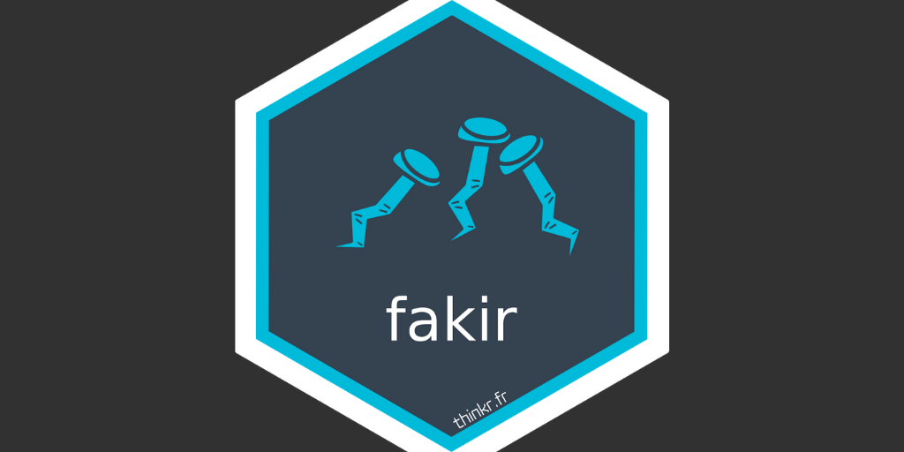

I’m very happy to announce that {fakir} is now on CRAN.
{fakir} stands for FAKe In R. It’s a package that generates fake datasets that can be used for prototyping {shiny} apps or for teaching.

Installation
You can install the latest version from your favorite CRAN repository with:
install.packages("fakir")
Examples
Fake support tickets
fakir::fake_ticket_client(vol = 10)
# A tibble: 10 × 25
ref num_client first last job age region id_dpt departement
<chr> <chr> <chr> <chr> <chr> <dbl> <chr> <chr> <chr>
1 DOSS-AMQN-002 79 Jovan O'Ke… Gene… 22 Bourg… 58 Nièvre
2 DOSS-NCKJ-010 69 Miss Lean… Emer… 68 <NA> 36 Indre
3 DOSS-GPBE-009 120 Odell Stok… Engi… 24 Limou… 87 Haute-Vien…
4 DOSS-GRLN-001 31 Loren Lars… <NA> NA Centre 36 Indre
5 DOSS-LEPJ-004 59 Maybelle Maye… Furt… 18 Champ… 08 Ardennes
6 DOSS-DUCL-005 118 Jamarion Ober… Engi… 18 Alsace 67 Bas-Rhin
7 DOSS-OCED-003 77 Lee Scha… Admi… NA Auver… 03 Allier
8 DOSS-KXSJ-007 65 Demetric Auer Cont… 21 Centre 45 Loiret
9 DOSS-UITD-006 141 Wilfrid Harv… Educ… 53 Aquit… 40 Landes
10 DOSS-SHKL-008 182 Addyson Nien… Earl… 65 Prove… 84 Vaucluse
# ℹ 16 more variables: cb_provider <chr>, name <chr>, entry_date <dttm>,
# fidelity_points <dbl>, priority_encoded <dbl>, priority <fct>,
# timestamp <date>, year <dbl>, month <dbl>, day <int>, supported <chr>,
# supported_encoded <int>, type <chr>, type_encoded <int>, state <fct>,
# source_call <fct>
Fake dataset of connected wearables
# A tibble: 10 × 8
name brand color price body_location category sent_from id
<chr> <chr> <chr> <int> <chr> <chr> <chr> <int>
1 Step and Distance P… Lark… Pink 3 Waist Industr… Taiwan 1
2 Biking Tracker U Pr… Lark… Oliv… 5 Waist Pets an… United S… 2
3 Wearable Transmitte… Moen… Beige 4 Feet Lifesty… Netherla… 3
4 Multifunction Track… Weim… Yell… 5 Head Lifesty… China 4
5 Action Camera Pro Blan… Mocc… 10 Brain Lifesty… Italy 5
6 Strapless Heart Rat… Mann… Deep… 4 Head Medical Finland 6
7 Action Camera RE Pr… Mann… Maro… 5 Feet Enterta… Finland 7
8 Microcontroller ES Moen… Pink 3 Neck Fitness Finland 8
9 Microcontroller OGB… Moen… Plum 5 Arms Awesome France 9
10 Wearable AUSG with … Moen… Dark… 9 Torso Medical Italy 10
Fake website visits
fakir::fake_visits(
from = "2017-01-01",
to = "2017-01-31"
)
# A tibble: 31 × 8
timestamp year month day home about blog contact
* <date> <dbl> <dbl> <int> <int> <int> <int> <int>
1 2017-01-01 2017 1 1 369 220 404 210
2 2017-01-02 2017 1 2 159 250 414 490
3 2017-01-03 2017 1 3 436 170 498 456
4 2017-01-04 2017 1 4 NA 258 526 392
5 2017-01-05 2017 1 5 362 NA 407 291
6 2017-01-06 2017 1 6 245 145 576 90
7 2017-01-07 2017 1 7 NA NA 484 167
8 2017-01-08 2017 1 8 461 103 441 NA
9 2017-01-09 2017 1 9 337 113 673 379
10 2017-01-10 2017 1 10 NA 169 308 139
# ℹ 21 more rows
Contribution & Feedback
You can contribute to {fakir} in various ways:
Feedback
If you discover any bug or have any feedback on the dataset generators, feel free to open an issue on the repo.
Translate
Some datasets are available in french and english:
fakir::fake_visits(
from = "2017-01-01",
to = "2017-01-31",
local = "fr_FR"
)
# A tibble: 31 × 8
dates an mois jour accueil a_propos blog contact
* <date> <dbl> <dbl> <int> <int> <int> <int> <int>
1 2017-01-01 2017 1 1 369 220 404 210
2 2017-01-02 2017 1 2 159 250 414 490
3 2017-01-03 2017 1 3 436 170 498 456
4 2017-01-04 2017 1 4 NA 258 526 392
5 2017-01-05 2017 1 5 362 NA 407 291
6 2017-01-06 2017 1 6 245 145 576 90
7 2017-01-07 2017 1 7 NA NA 484 167
8 2017-01-08 2017 1 8 461 103 441 NA
9 2017-01-09 2017 1 9 337 113 673 379
10 2017-01-10 2017 1 10 NA 169 308 139
# ℹ 21 more rows
And we will be very happy to bring new languages in the package.
New dataset
Feel free to create new datasets generators.
If you want to contribute a new language or a new dataset, please open an issue first so that we can discuss and keep track of it!